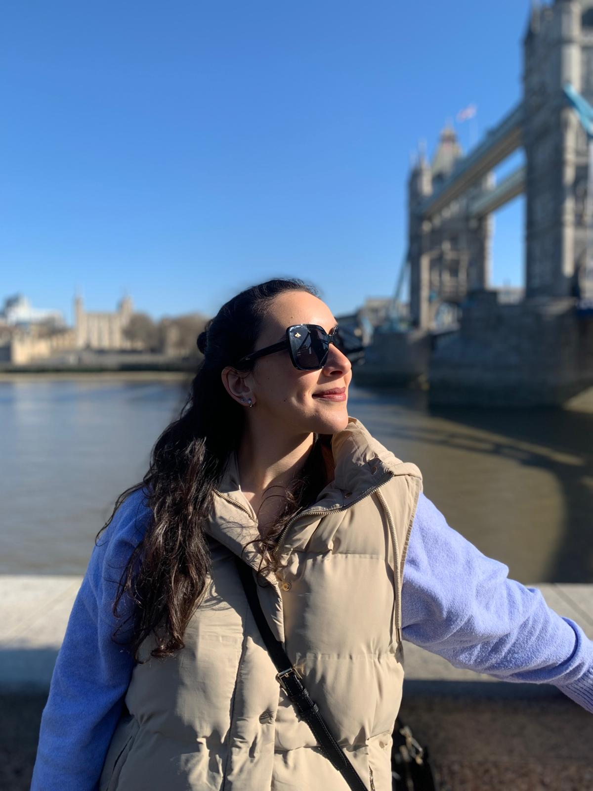

Bienvenida
¡Hola! Soy Sara.
Gracias por visitar mi página personal. Aquí encontrarás una visión general sobre mí, mis intereses, los proyectos en los que he trabajado y la forma en la que puedes ponerte en contacto conmigo.
Esta web ha sido diseñada como parte de mi formación en el Máster Universitario en Ingeniería Web de la Universidad de Oviedo, poniendo en práctica principios de accesibilidad, usabilidad y diseño responsivo.
Te invito a explorar el contenido y conocer un poco más sobre mí. ¡Espero que disfrutes la visita!
